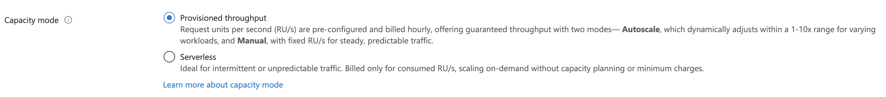

Request Unit (RU)
If chosen RU instead of VCore then everything is based on RU. E.g. if you choose 1000 RU/s, it means you can perform 1000 RU worth of operation per second.
Capacity Planner
https://cosmos.azure.com/capacitycalculator/
Capacity Mode
- Provisioned throughput mode, charged per hour
- Autoscaled
- Manual
- Serverless mode
| Capacity Model | Provisioned Throughput(Autoscale) | Consumption-Based |
|---|---|---|
| How to Scale | You set a Max RU/s (e.g., 4,000 RU/s). The system scales automatically between 10% (400 RU/s) and 100% of that maximum. | Scales instantly and automatically to handle the consumed RUs, with a practical upper limit (e.g., 5,000 RU/s per physical partition). No throughput is reserved. |
| Billing | You are billed hourly based on the highest RU/s the system scaled to in that hour (between 10% and 100% of your maximum). | You are billed only for the total Request Units (RUs) consumed by your operations, plus storage. This is a pure pay-per-request model. |
| Best For | Workloads with variable or unpredictable traffic that need guaranteed high capacity during peaks (e.g., e-commerce traffic). | Workloads with intermittent, low-volume, or unpredictable traffic and long idle times (e.g., dev/test environments, batch jobs). |
| Geo-Redundancy | Available (Supports multiple read and multi-write regions). | Unavailable (Limited to a single Azure region). |
| Predictability | More predictable cost, as you pay for a reserved range of throughput. | Less predictable cost, as it depends entirely on the volume of requests. |
| Minimum Cost | Has a minimum hourly cost (10% of your Max RU/s is the minimum charge). | Has no minimum hourly charge for throughput (but a minimum billable storage may apply). |

You can switch a Cosmos DB account from Serverless to Provisioned Throughput (either Manual or Autoscale). You cannot switch a Cosmos DB account back from Provisioned Throughput to Serverless. This is an irreversible operation.
Calculate RU/s
RU are based on this factors - Item size (1kb) - Write cost is 5 times of read, this includes indexing and others. - Data Consistency (Strong) - Type of read (Point read) - Query Pattern (Projection / Predicate) - Script usage - Request Unit set in 1 region is AUTO set in another region. E.g. If set 1000RU for 1 region and have 2 multi-region, it's auto set to 1000RU as well; cost wise will be 2000RUs.
Autoscale
- While it sounds great, the charge rate for Autoscale is $0.12 per 100 RU/s compared to Manual which is $0.08. Thus, if the consumption does not consistently go beyond 66% of your max RU/s, autoscale can be much more cost effective.
- Azure Cosmos DB only scales the RU/s to the maximum throughput when the normalized RU consumption is 100% for a sustained, continuous period of time in a 5-second interval.
- Minimum is 10x of what scaled. E.g. if scaled 20,000, minimum is 2,000. The charges of even have no RU/s consumed is 2000.
- The lowest value for Max autoscaling for Autoscale is 1000, cannot go below (hence if requirements like 600Rus best go with manual)
Shared Throughput
- If you provision throughput on a database, all the containers, for example collections/tables/graphs within that database can share the throughput based on the load. Throughput reserved at the database level is shared unevenly, depending on the workload on a specific set of containers.
- If you provision throughput on a container, the throughput is guaranteed for that container, backed by the SLA. The choice of a logical partition key is crucial for even distribution of load across all the logical partitions of a container. See Partitioning and horizontal scaling articles for more details.
Reserved capacity
There is also reserved capacity/RU in terms of 1 year or 3 years. https://learn.microsoft.com/en-us/azure/cosmos-db/reserved-capacity
Scaling RU
- Instant Scale up
- Asynchronous (4-6)
- Scale down
https://learn.microsoft.com/en-us/azure/cosmos-db/scaling-provisioned-throughput-best-practices#background-on-scaling-rus
Asynchronous Scale up
- When the requested RU/s are higher than what can be supported by the physical partition layout, Azure Cosmos DB splits existing physical partitions. This occurs until the resource has the minimum number of partitions required to support the requested RU/s.
- As a result, the operation can take some time to complete, typically 4-6 hours. Each physical partition can support a maximum of 10,000 RU/s (applies to all APIs) of throughput and 50 GB of storage (applies to all APIs, except Cassandra, which has 30 GB of storage).
- If you perform a change write region operation or add/remove a new region while an asynchronous scale-up operation is in progress, the throughput scale-up operation pauses. It resumes automatically when the failover or add/remove region operation is complete.
RU between container and database
Dedicated Throughput is Separate
When you set manual throughput on a container, you are creating a dedicated throughput container. This throughput is exclusively reserved for that container and is separate from the throughput provisioned at the database level.
Database Throughput (Shared): 5,000 RU/s
Container 1 (Dedicated): 4,000 RU/s
Container 2 (Dedicated): 6,000 RU/s
Verdict: Container 2 get 6k, regardless of DB setting
Shared throughput usage
- Only if there is a required of shared throughput (there is a checkbox) per container.
- You have many containers, and dedicating throughput to each one individually would be too expensive or complex to manage.
- Your containers have similar requests and storage needs, or you have sporadic, bursty traffic that can benefit from pooling the resources (like in a multitenant application where each user has their own container).
- You don't need predictable performance for every single container.
Monitoring RU
To know the charges via SDK - feedResponse.RequestCharge - itemResponse.RequestCharge
ItemResponse<Product> response = await container.CreateItemAsync<Product>(item);
Console.WriteLine($"RUs:\t{response.RequestCharge:0.00}");
Query with Agregration consumes less RU
If i run
SELECT VALUE MIN(c.cost) FROM c
vs
SELECT TOP 1 c.cost ORDER BY c.cost ASC
Which uses less RU?
Agregrate uses less because: - Sorting affect whole db, min is first fail (consider as using fold method) - If there is indexing(range or composite), it can immediately find it. Even without it's faster with find first.
RU costs
Azure Cosmos DB is billed in units of 100 RU/s per hour. For example, if your rate is 0.8 cents per 100 RU/s per hour (which is the standard rate of $0.008 USD), this charge applies continually on an hourly basis.